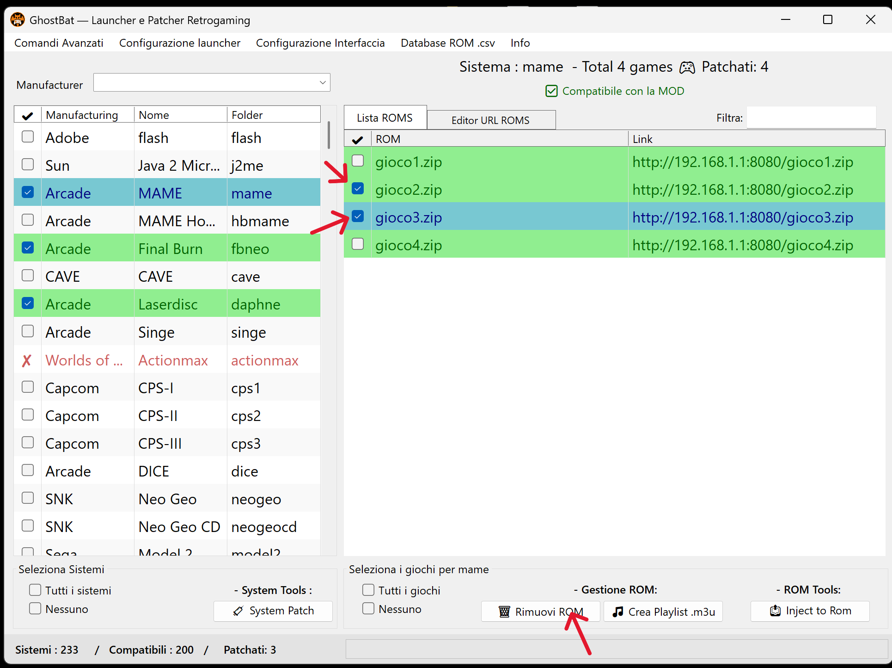
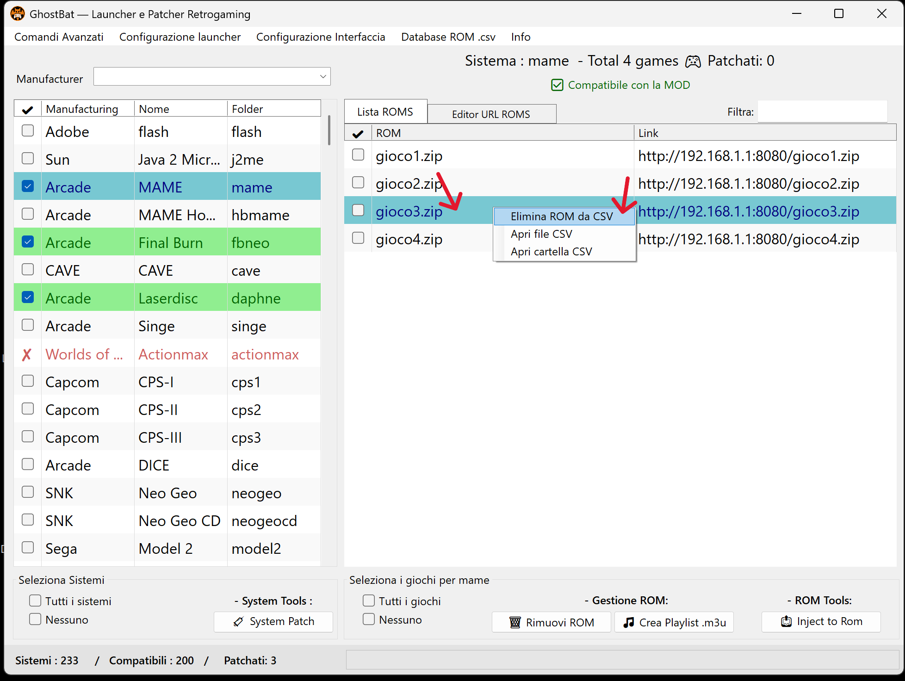

📘 Guida all'uso di GhostBat — Tutorial passo-passo
⚠️ 1. Lettura del disclaimer iniziale
All'avvio di GhostBat viene mostrato un messaggio di disclaimer sul funzionamento reversibile del programma. L’utente deve cliccare “Sì” per procedere.

🔎 2. Verifica di RetroBat
Dopo aver accettato il disclaimer, GhostBat controlla se RetroBat è presente nella root del disco.
✅ RetroBat trovato! Vuoi applicare la mod?

✅ 3. Conferma applicazione mod
GhostBat applica la mod e mostra il messaggio:
Mod installata correttamente! Ora puoi selezionare i sistemi compatibili.

🧩 4. Apertura del patcher selettivo
Il patcher nella cartella mod consente di:
- Visualizzare la lista dei sistemi RetroBat compatibili
- Selezionare singolarmente i sistemi da patchare

🛠️ 5. Selezione dei sistemi
✔️ Puoi:
- Spuntare solo i sistemi desiderati
- Oppure selezionarli tutti
- Premere System Patch per applicare la patch

🍃 6. Sistemi patchati
I sistemi patchati correttamente appaiono con riga verde nella lista laterale.

🌐 7. Apertura dell’Editor URL ROMS
Clicca su Editor URL ROMS per iniziare a compilare le ROM.

🌍 8. Inserimento link ROM
📌 Inserisci:
- Nome file ROM (es.
testgame.extension) - Link remoto o locale (es.
http://192.168.1.118:8080/testgame.extension)
✅ Premi Add ROM link per salvare nel file .csv associato.
🔍 Requisiti tecnici
- Estensione obbligatoria nel nome e nel link
- ⚠️ Senza estensione, RetroBat può dare errore
- ✔️ Attiva “Auto titolo” per generare il nome automatico
📦 ROM composte da più file
GhostBat supporta:
- MAME Naomi 2 →
.zip+.chd - Daphne →
.zipprincipale + archivi separati
Inserisci i file in sequenza e il launcher li associa correttamente.

💿 9. Generazione M3U per giochi multi-disco
GhostBat genera file .m3u per giochi con più dischi, come PlayStation 1.
- Inserisci i link dei dischi
- Spunta i file che compongono lo stesso gioco
- Premi Genera Playlist .m3u
⚠️ Se applichi la patch globale prima del M3U, i dischi saranno trattati separatamente. Consigliato: rimuovere e reinserire manualmente prima di generare.

🧃 10. Iniezione delle ROM
Vai alla tab Lista ROMs, seleziona e premi Inject to ROM. Le ROM patchate appaiono in riga verde.

✅ 11. Conferma finale
Messaggio mostrato:
Completato. 1 file generati nella cartella 'roms'.

🗑️ 12. Rimozione ROM — file patch vs voce CSV
🔥 Rimuovi file patchati
- Spunta le ROM
- Premi Rimuovi ROM
📌 Il file viene eliminato, ma la voce nel CSV rimane.
🧹 Rimuovi voce dal CSV
- Clic destro sulla voce
- Seleziona Rimuovi da CSV
📦 Il file rimane, ma la voce nel CSV viene cancellata.
🔁 Per rimuovere completamente una ROM: esegui entrambe le operazioni.
🛠️ 13. Menu Funzioni Avanzate
📂 Comandi
- Applica patch a tutti i sistemi e ROMs
Applica automaticamente la patch su tutti i sistemi supportati e le ROM presenti nei file.csv. - Rimuovi mod definitivamente
Rimuove tutti i sistemi patchati, le ROM iniettate e i file installati da GhostBat. Ripristina RetroBat allo stato originale.
📘 Info
- Leggi README
- Leggi Disclaimer
- Leggi License
I documenti sono disponibili in lingua italiana e inglese. GhostBat è interamente localizzato in italiano.
ℹ️ Note tecniche
- Tutte le modifiche effettuate tramite GhostBat sono temporanee e reversibili
- Ogni sistema patchato genera un file
.csvcontenente i link alle ROM - Le patch generano file nella cartella
roms/con lo stesso nome del file inserito
✅ È possibile:
- Aggiungere nuove ROM in qualsiasi momento
- Rimuovere voci dal CSV senza cancellare i file
- Ripetere la patch ogni volta che serve
🧠 Uso corretto dei file CSV
I file .csv devono essere creati esclusivamente tramite l’Editor integrato.
Modifiche manuali da editor esterni possono causare:
- ❌ Errori nella gestione multi-link
- ❌ Conflitti o duplicazioni tra voci
- ❌ Malfunzionamenti nel patcher o launcher
✔️ L’Editor ufficiale garantisce:
- Gestione sintassi e struttura compatibile
- Rimozione automatica dei file e dei doppioni
- Compatibilità con tutte le funzioni di GhostBat
💡 Per una compatibilità sicura: non esportare, modificare o ripubblicare manualmente i file .csv
🎉 Grazie!
Grazie per aver scelto GhostBat! Per supporto, visita il repository GitHub ufficiale o apri una issue nella sezione Issues.